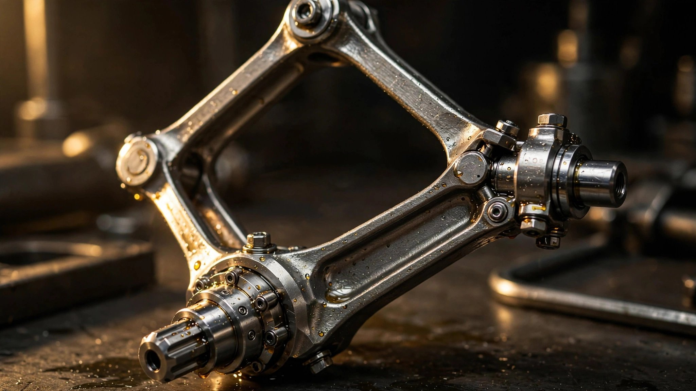

Four Links, No Balance Shafts: How a Diamond-Shaped Mechanism Solved the Compression Tradeoff

Every gasoline engine ever mass-produced has faced the same constraint. A high compression ratio wrings more work from each combustion event, improving thermal efficiency and fuel economy. A low compression ratio leaves room in the cylinder for a turbocharger to pack in extra air and fuel, producing the surge of power that pin you into your seat. Pick one. You cannot have both, because the distance the piston travels is fixed. It was cast into the crankshaft when the foundry poured the metal, and it will stay there for the life of the engine.
Engineers have known this tradeoff since Nikolaus Otto's four-stroke patent in 1876. Saab built a variable-compression prototype in 2000, using a hinged monohead that tilted the entire cylinder head relative to the block. It was brilliant and impractical. FEV and MCE-5 tried other approaches through the 1990s and 2000s, adding pistons within pistons, hydraulic chambers above the combustion space, or secondary crankshafts. None survived contact with a production timeline. By 2010, the idea had become one of those perpetual promises of engine engineering: theoretically transformative, practically impossible.
In 2018, Nissan shipped one. Coded KR20DDET and branded VC-Turbo, it is a 2.0-litre turbocharged inline four-cylinder that changes its compression ratio continuously while running, sweeping from 8:1 under full boost to 14:1 at light cruise. It debuted in the Infiniti QX50 and later spread to the Nissan Altima, Rogue, Murano, and QX60. By any measure of mechanical ambition, it is the most structurally unconventional production engine of the last thirty years. And the mechanism at its core is not electronic, not hydraulic, not pneumatic. It is a set of steel links, arranged in a diamond, doing what a connecting rod has always done, only better.
A Century of Fixed Geometry
In a conventional engine, the connecting rod is a simple beam. Its small end pins to the piston. Its big end wraps around a journal on the crankshaft. As the crankshaft rotates, the rod converts the piston's linear reciprocation into rotary motion. Bore diameter, stroke length, and the geometry of the rod together define the compression ratio permanently.
Changing that ratio while the engine is running means changing the effective stroke, the distance the piston travels between bottom dead centre and top dead centre. Lengthen the stroke and the piston rises higher into the combustion chamber, squeezing the trapped charge into a smaller volume. Shorten it and the piston stops lower, leaving a larger volume above. Compression ratio is the mathematical relationship between these two volumes. Adjusting it requires physically moving the piston's upper or lower bound, and doing so continuously, under load, at thousands of cycles per minute, without breaking.
Nissan's engineers started working on the problem in 1998. Over the next twenty years, they filed more than 300 patents. Most of those patents describe the mechanism that eventually reached production: a multi-link system that replaces the connecting rod's big end with a four-bar linkage.
Inside the Diamond
A VC-Turbo cylinder contains four links where a conventional engine has one connecting rod. An upper link, or U-link, connects to the piston pin at its top. At its bottom, the U-link does not wrap around the crankpin directly. Instead, it connects to a lower link, or L-link, which is a roughly triangular arm that does ride on the crankpin. A third arm, the control link, connects the L-link to an eccentric journal on a control shaft that runs the full length of the engine block, parallel to and below the crankshaft. Together, the U-link, L-link, and control link form a trapezoidal arrangement, a diamond-shaped kinematic chain, with the crankpin and control shaft journal as its two lower pivots.
When the control shaft rotates, its eccentric journal moves the anchor point of the control link. Because the control link constrains the bottom of the L-link, rotating the control shaft changes the angle at which the L-link presents the crankpin's motion to the U-link. At one extreme, the L-link's geometry lifts the piston's top dead centre higher into the combustion chamber. At the other, it drops top dead centre lower. Stroke length changes by 1.2 millimetres between the two positions. Displacement shifts from 1,970 cc at the 14:1 high-efficiency setting to 1,997 cc at the 8:1 high-performance setting. A difference of 27 cubic centimetres, not much more than a shot glass, separates maximum efficiency from maximum power.
All four cylinders share a single control shaft, so all four compression ratios change simultaneously. Rotation of the control shaft is not limited to two endpoints. Any position between the extremes yields a corresponding compression ratio, making the system continuously variable, not a two-mode toggle. A driver rolling onto the throttle at highway speed might operate at 12:1 or 11:1 for several minutes without ever reaching either end of the range.
Borrowing from Robotics
Rotating the control shaft requires precise, measured force. A 0.5-kilowatt electric motor mounted on the side of the engine block handles actuation through a device borrowed from an entirely different industry: a Harmonic Drive reduction gear.
Harmonic Drives are strain-wave gearing systems used in robotic arms, satellite antenna positioners, and semiconductor wafer handlers, applications where backlash-free positioning and high gear reduction in a compact package are essential. A flexible steel cup, called the flexspline, meshes with a rigid circular spline through the action of an elliptical wave generator. As the wave generator rotates inside the flexspline, it deforms the cup's teeth into engagement with the circular spline at two points on opposite sides of the ellipse. Because the flexspline has two fewer teeth than the circular spline, each full rotation of the wave generator advances the flexspline by those two teeth, producing a reduction ratio typically between 50:1 and 160:1 in a single stage.
For the VC-Turbo, Nissan selected a Harmonic Drive unit that fits against the engine block's exterior. A short control arm connects the Harmonic Drive's output to the eccentric control shaft via an A-link. When the engine's electronic control unit calls for a compression ratio change, it commands the motor. The Harmonic Drive amplifies the motor's torque and eliminates backlash, positioning the control shaft with enough precision to set any target ratio within the 8:1 to 14:1 range. Full sweep from one extreme to the other takes approximately 1.5 seconds. In practice, transitions between adjacent ratios happen in well under a second, because the system is always moving toward its target, never waiting for a mode switch.
Killing the Balance Shafts
Inline four-cylinder engines vibrate. Not because they are poorly built, but because the geometry of a conventional connecting rod makes it unavoidable. As a traditional con-rod sweeps through its arc around the crankpin, the piston does not move in a perfectly sinusoidal pattern. It accelerates faster near top dead centre than it decelerates near bottom dead centre, because the rod's angle changes during the stroke. This asymmetry produces a secondary vibration at twice the crankshaft frequency, known as a second-order harmonic. In a four-cylinder engine, the second-order harmonics from all four pistons add constructively rather than cancelling. Most modern inline fours install a pair of counter-rotating balance shafts, driven by the crankshaft at double its speed, specifically to cancel this vibration.
Balance shafts work, but they extract a price. Each pair adds roughly three to five kilograms to the engine's mass. Spinning at twice crank speed, they consume parasitic power through bearing friction, oil churning, and drive-chain tension. In a fuel-economy-focused engine, that parasitic loss is measurable.
Nissan's multi-link geometry eliminates the problem at its source. Because the U-link connects to the L-link rather than directly to the crankpin, the effective kinematic chain keeps the U-link nearly vertical throughout the piston's travel. In a conventional engine, the con-rod swings through a significant angle, which is what distorts the piston's motion from sinusoidal. In the VC-Turbo, the L-link absorbs that angular change while the U-link remains close to plumb. Piston motion becomes nearly symmetrical between the upstroke and downstroke, approximating true sinusoidal reciprocation. Second-order vibrations are reduced to levels so low that balance shafts are unnecessary. Nissan removed them entirely.
Eliminating the balance shafts also eliminated their friction. Combined with the straighter connecting rod path, which reduces lateral piston forces against the cylinder wall, Nissan claims the VC-Turbo achieves lower internal friction than most conventional inline fours despite carrying additional linkage hardware in each cylinder.
Mirror Bore and Active Mounts
Reduced piston side loading is only part of the friction story. Nissan applied a plasma-sprayed iron coating to the cylinder walls, a process the company calls mirror bore coating. A plasma jet melts iron wire and deposits a thin metallic film directly onto the aluminium bore surface. After hardening, the coating is honed to a mirror-like finish that reduces cylinder wall friction by 44 percent compared to a conventional iron sleeve. Thinner than a cast-in liner, the coating also improves heat transfer from the combustion chamber to the coolant jacket, helping manage thermal loads under boost.
Vibration refinement extends beyond the engine's internal geometry. An active engine mount, which Nissan calls the Active Torque Rod, sits at the upper mounting point of the engine. A G-sensor detects residual vibrations transmitted through the mount. A small actuator generates counter-vibrations in real time, cancelling engine noise at the mount interface by destructive interference. Nissan claims a 9-decibel reduction in transmitted engine noise compared to a passive mount. In subjective terms, the VC-Turbo in the QX50 produces cabin noise levels closer to a V6 than to a conventional turbocharged four-cylinder.
Two Combustion Cycles, One Engine
Variable compression ratio enables a second transformation that fixed engines cannot perform. At high compression ratios, the VC-Turbo operates on an Atkinson cycle. Electronic variable valve timing holds the intake valves open slightly into the compression stroke, allowing a small portion of the intake charge to flow back into the intake manifold. Effective displacement drops below physical displacement. Less charge is compressed, but the expansion stroke remains long relative to the effective intake, extracting more work from each gram of fuel. Thermal efficiency rises. This is the same cycle that Toyota uses in its hybrid powertrains, but in the VC-Turbo it is achieved mechanically by the high compression ratio without requiring an electric motor to supplement low-speed torque.
When the driver demands full power, the ECU simultaneously drops the compression ratio toward 8:1, closes the intake valves at their normal point to retain the full charge, spools the single-scroll turbocharger to 1.6 bar of boost, and switches from the Atkinson cycle to a conventional Otto cycle. Both multi-point injection and gasoline direct injection systems are active, with GDI providing charge cooling to prevent knock at low compression ratios and MPI ensuring complete combustion at light loads. Peak output reaches 268 horsepower at 5,600 rpm and 280 pound-feet of torque at 4,400 rpm. In the Altima, a slightly different calibration produces 248 horsepower.
Fuel economy tells the story the specifications obscure. Compared to the 3.5-litre VQ-series V6 it replaced, the VC-Turbo delivers 35 percent better fuel economy in front-wheel-drive applications. It achieves this while weighing 18 kilograms less and occupying a smaller footprint in the engine bay. An integrated exhaust manifold built into the aluminium cylinder head shortens the exhaust path to the turbocharger and catalytic converter, reducing thermal mass and helping the catalyst light off faster during cold starts.
Durability and the L-Link Question
Multi-link systems concentrate stress differently than conventional connecting rods. In December 2023, the U.S. National Highway Traffic Safety Administration opened an investigation into customer complaints of engine failure in both the KR15DDT and KR20DDET variants. Reports described engine knock, loss of power, and metal shavings in oil pans. NHTSA's investigation identified seizures and damage to the main bearings and L-links as the primary failure mode. Nissan acknowledged the issue and stated it was modifying its manufacturing process to address the failures.
Multi-link components in the VC-Turbo are manufactured from high-carbon steel alloy, heat-treated to withstand the cyclic loading of thousands of combustion events per minute. Each L-link rides directly on the crankpin, experiencing the same bearing loads as a conventional connecting rod big end, but with additional bending moments introduced by the control link attachment. Bearing clearances, surface finish, and oil film thickness in the L-link journal are all critical parameters that cannot tolerate the same manufacturing variation a simpler big-end bearing might absorb. Nissan's response suggests that the original production tolerances or heat-treatment profiles for these components were tighter than their manufacturing process consistently achieved.
What Complexity Buys
Viewed purely as a parts count, the VC-Turbo is extravagant. Where a conventional engine has one connecting rod per cylinder, this one has three separate links, a control shaft with four eccentric journals, a Harmonic Drive actuator, an electric motor, an active engine mount with its own sensor and actuator, and plasma-sprayed bore coatings. Every additional part is an additional tolerance to hold, an additional surface to lubricate, and an additional joint that can fail.
But the complexity is purposeful. Each link and each actuator eliminates something else. Balance shafts, gone. The mass and friction penalty of a V6, gone. The efficiency gap between a naturally aspirated cruising engine and a turbocharged performance engine, largely closed. In a single architecture, the VC-Turbo covers a performance and efficiency range that previously required two different engines or a hybrid electric supplement. Nissan claims it costs slightly less to manufacture than the VQ-series V6 with VVEL variable valve lift it replaced, despite the additional linkage hardware, primarily because it is a compact four-cylinder rather than a wide V6.
After twenty years of development and more than 300 filed patents, the VC-Turbo remains the only production engine in the world with true variable compression. No other manufacturer has matched it. Whether the mechanism proves durable enough to outlast the cars it powers is still being written in service records and NHTSA databases. But as a piece of mechanical engineering, it answers a question that internal combustion has been asking since the first piston descended a cylinder bore: why should compression be a fixed number?
References
- Nissan Motor Corporation, “VC-Turbo: The World’s First Production-Ready Variable Compression Ratio Engine,” INFINITI Global Newsroom, 2018.
- Nissan Motor Corporation, “VC-Turbo Engine,” Innovation section, nissan-global.com.
- Motor Trend, “Infiniti VC-Turbo Engine: Get Freaking Excited,” 2017.
- Motor Authority, “Infiniti’s Variable-Compression Engine: Witchcraft Explained,” 2017.
- WhichCar Australia, “Geek Speak: Variable Compression Engines,” 2017.
- Fender Bender, “A Look at Nissan’s Variable Compression System,” 2019.
- Wikipedia, “Nissan KR Engine,” citing NHTSA investigation PE23-025 and production application history.
- Digital Trends, “Will Nissan’s Variable Compression Tech Be a Game-Changer for Gasoline Engines?,” 2016.
- U.S.A. INFINITI News, “INFINITI VC-Turbo: The World’s First Production-Ready Variable Compression Ratio Engine,” technical press release.
- Harmonic Drive AG, product literature describing strain-wave gearing principles and reduction ratios.